User Manual#
This chapter covers how to use the MDS-Desktop App as an Enduser.
Resource Management#
Here we show how to use the app to create different kinds of Resources in the Backend. These include users, groups, operations.
Users#
In the app users can be created, changed and deleted. To manage the users navigate to the users page by clicking of the Users link (1) in the sidebar. Be aware only users with the user.view permission are able click this link.
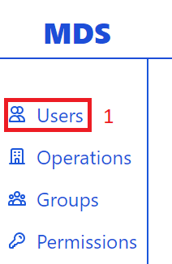{kind=link}
This will open the users page with a paginated table with all the users.
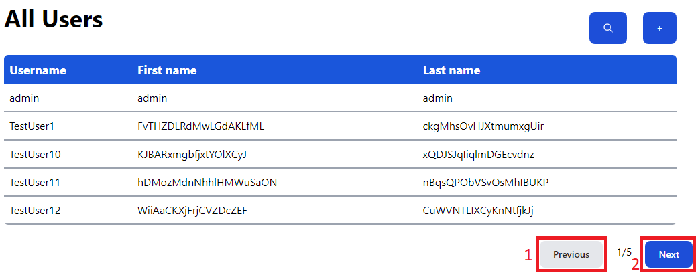{kind=link}
Here you can click through pages of users using the next button (2) and previous button (1). If the button become greyed out this means that there is not corresponding previous or next page. The number of pages and the number of current page are displayed between the two pagination buttons.
Creating Users#
To create users first click the + button (1) on the users page on top of the paginated table. Be aware only users with the user.create permission will be able to click this button.
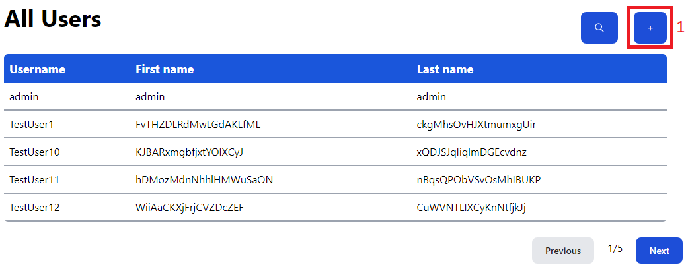{kind=link}
This opens the user creation form. Here you need to fill in the necessary fields in the user creation form (1). These are the username, first name, last name and password. After filling in this form click on the Create User button (2) to create a user with the provided data. You will not be redirected to the users page, in case you want to create multiple users one after the other. If you want to stop creating users and return to the users page click the Cancel button (3).
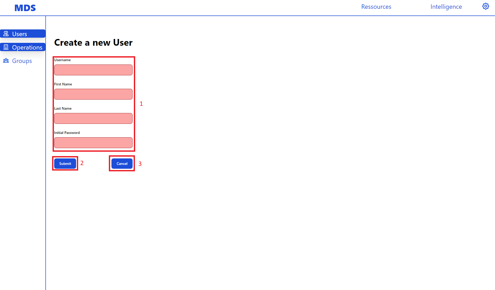{kind=link}
Editing & Deleting Users#
To edit or delete users click on the user you want to change or delete in the paginated table (1).
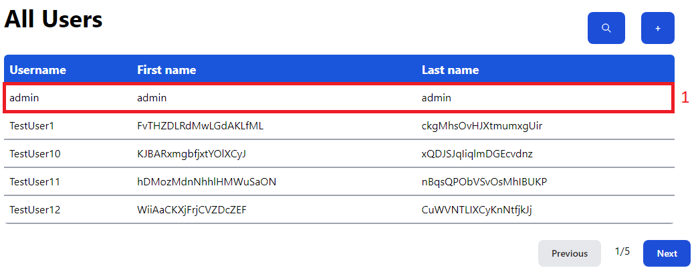{kind=link}
This opens the user update form. Here you can change the username, first name and last name of a user in the update user form (1). To submit the user changes click the Change User button (2). Be aware only users with the user.update permission can update users. As users cannot be deleted you can instead set them to inactive by unchecking the active checkbox. Be aware only users with the user.set-active-state permission can change a users active state. If you want to don’t want to change the user and want to return to the users page click the Cancel button (3).

Operations#
In the app operations can be created and updated, but not deleted. Instead of being deleted operations can be set to archived. To manage operations click on the operations link in the sidebar (1). Be aware only users with the operation.view.any permission can click this link.
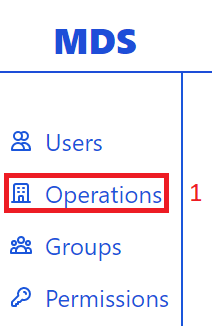{kind=link}
This will open the operations page with a paginated table with all operations.
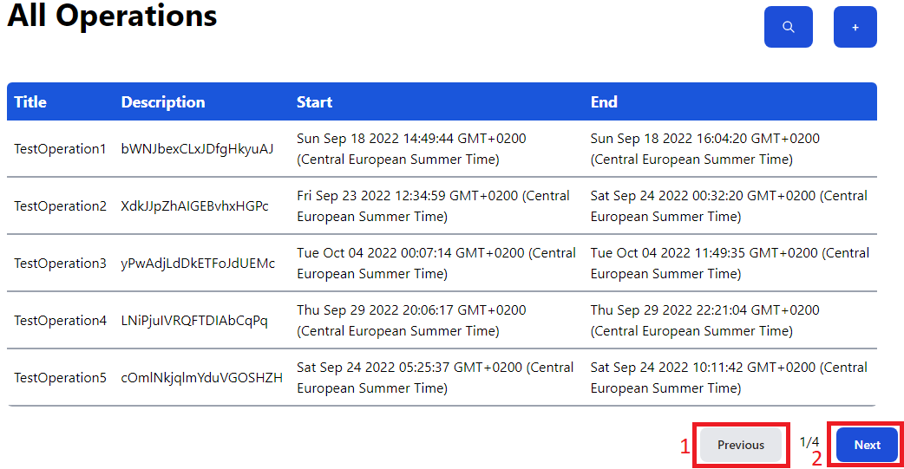{kind=link}
Here you can click through pages of operations using the next button (2) and previous button (1). If the button become greyed out this means that there is not corresponding previous or next page. The number of pages and the number of current page are displayed between the two pagination buttons.
Creating Operations#
To create an operation click on the + button (1) on top of the paginated table. Be aware only users with the operation.create permission can click on this button.
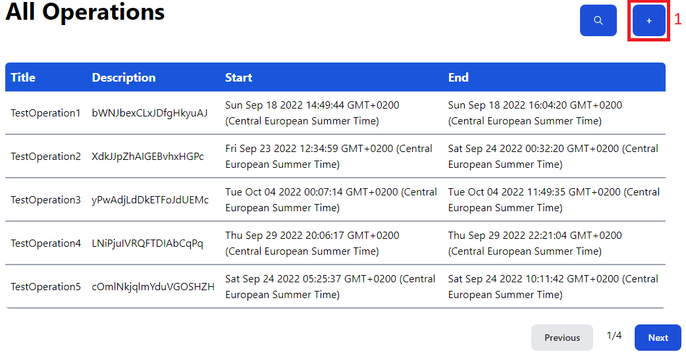{kind=link}
This opens the operation creation form. Here you need to fill in at least the required fields for the operation creation form (1). These are the title and a starting date & time. All other fields ore optional. For more information on how to add and remove operation members see the section on Member Management. Beware only users with the operation.members.update permission can add and remove members and only users with the operation.members.view permission can see the operation members. If you want to create a operation with the provided data click on the Create Operation button (2). You will not be redirected to the operations page, in case you want to create multiple operations one after the other. If you want to stop creating operations and return to the operations page click the Cancel button (3).
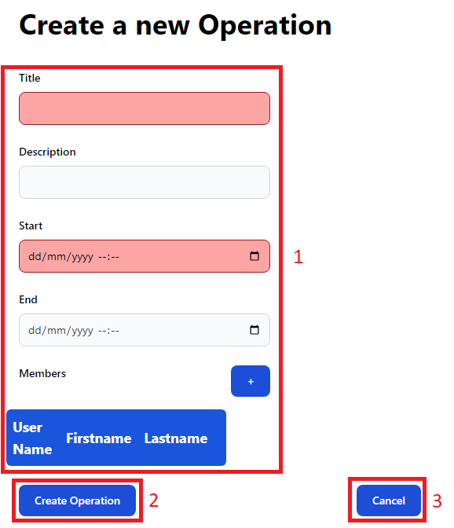{kind=link}
Editing Operations#
To change an operation click on the operation in the paginated table of operations you want to change (1).
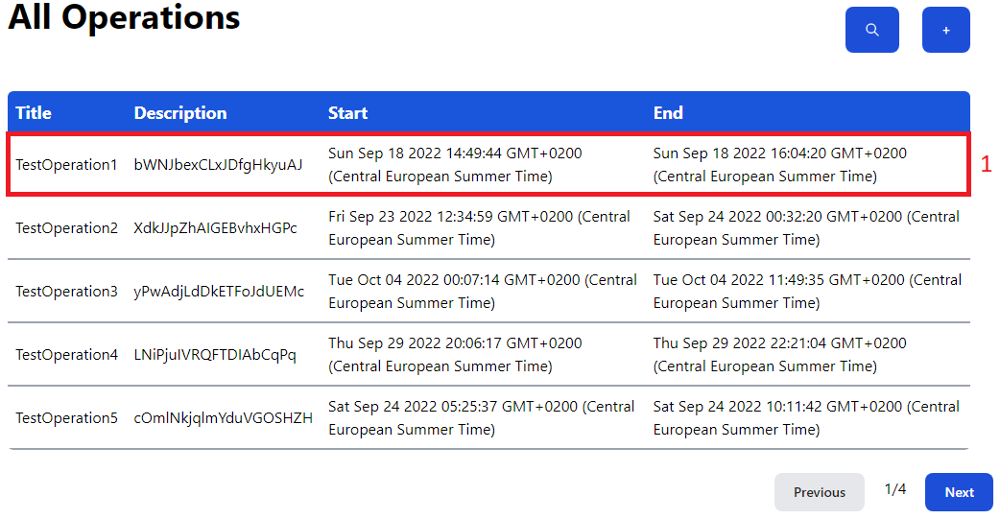{kind=link}
This opens the operation update form. Here you can change the title, description, start date & time as well as the end date & time, the operation members and the archived status of the operation in the operation update form (1). The changing of the archived status is used to mark operations which are not needed anymore, as they cannnot be deleted for technical reasons. For more information on how to add and remove members see the section on Member Management. Beware only users with the operation.members.update permission can add and remove members and only users with the operation.members.view permission can see the operation members. If you want to change the operation with you provided data click on the Update Operation button (2). Be aware that only users with the operation.update permission can click this button. If you do not want to change the operation and return to the operations page click on the Cancel Button (3).
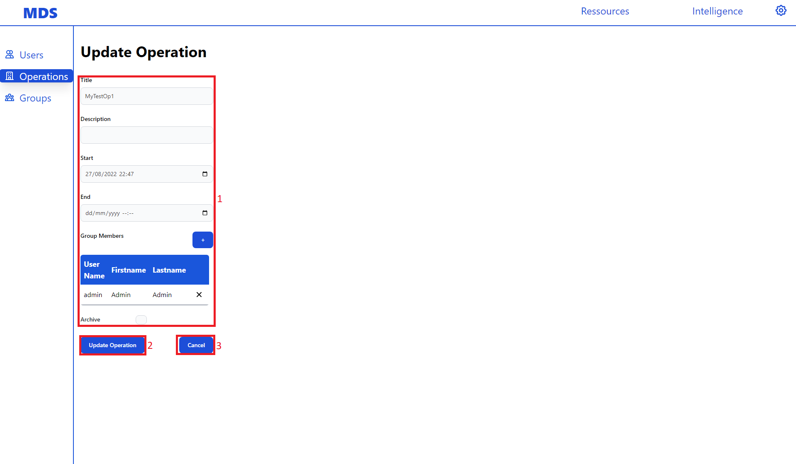{kind=link}
Groups#
In the app groups can be created, updated and deleted. To manage groups click on the groups link in the sidebar (1) Be aware that only users with the group.view permission can click this link.
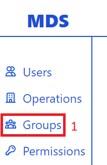{kind=link}
This opens the groups page with a paginated table of all groups.
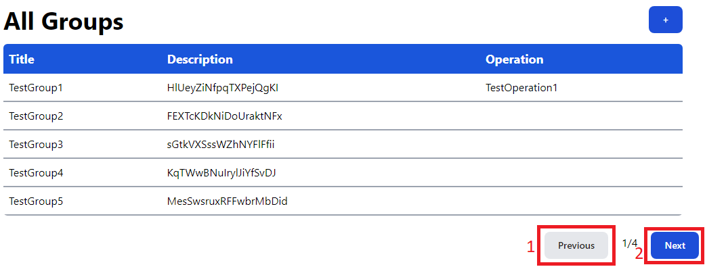{kind=link}
Here you can click through pages of groups using the next button (2) and previous button (1). If the button become greyed out this means that there is not corresponding previous or next page. The number of pages and the number of current page are displayed between the two pagination buttons.
Creating Groups#
To create a group click on the + button (1) on top of the paginated table. Be aware only users with the group.create permission can click on this button.
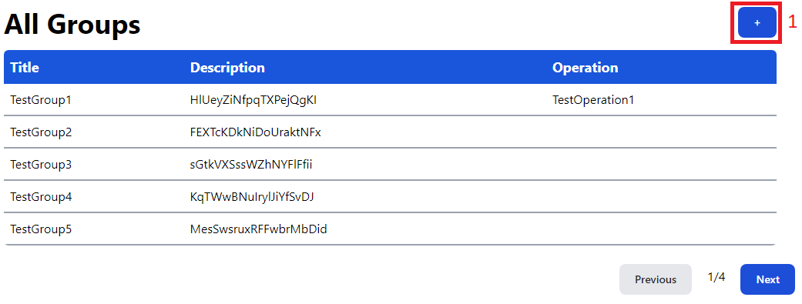{kind=link}
This opens the group creation form. Here you need to fill in at least the required fields for the group creation form (1). The only required field is the title. All other fields ore optional. For more information on how to add and remove group members see the section on Member Management. If you have selected on associated operation only members of that operation can be added as group members. If you want to create a group with the provided data click on the Create Group button (2). You will not be redirected to the groups page, in case you want to create multiple groups one after the other. If you want to stop creating groups and return to the group page click the Cancel button (3).
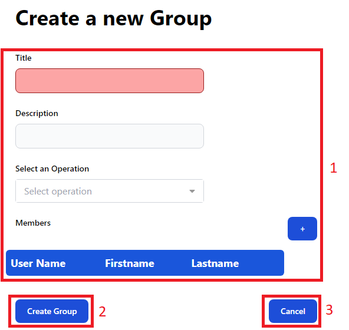{kind=link}
Editing & Deleting Groups#
To change a group click on the group in the paginated table of groups you want to change (1).
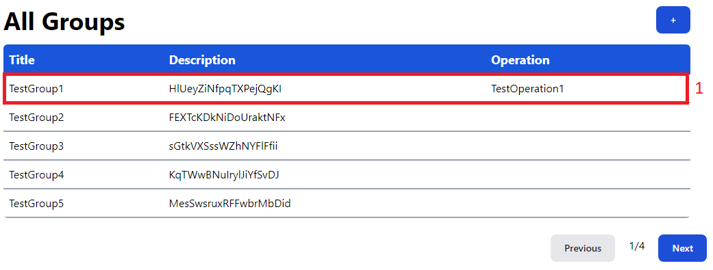{kind=link}
This opens the group update form. Here you can change the title, description, associated operation and the group members in the group update form (1). For more information on how to add and remove members see the section on Member Management. If you have selected on associated operation only members of that operation can be added as group members. If you want to change the group with you provided data click on the Update Group button (2). Be aware that only users with the group.update permission can click this button. If you want to delete the gorup click the Delete Group button (3). Be aware that only users with the group.delete permission can click this button. If you do not want to change the group and return to the groups page click on the Cancel Button (4).
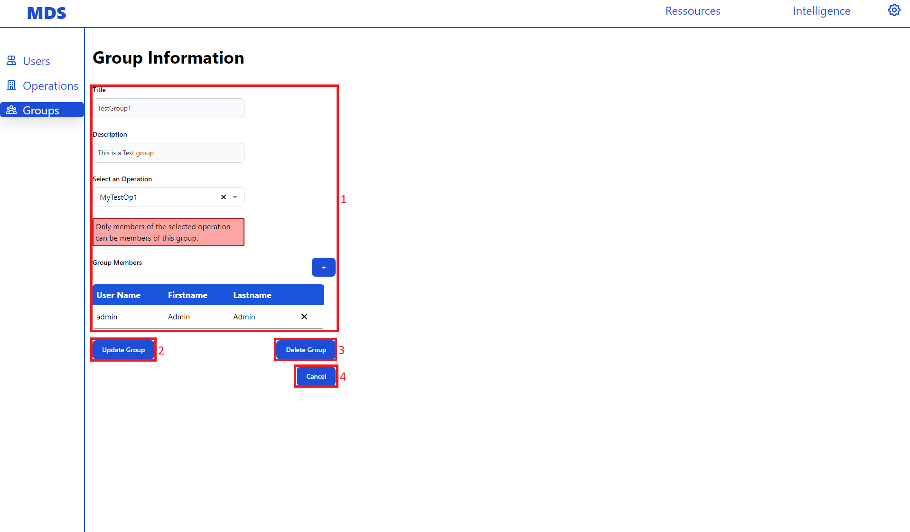{kind=link}
Permissions#
To grant or revoke permissions for users click on the Permissions link (1). This opens a view displaying a paginated list of users with thier granted permissions.
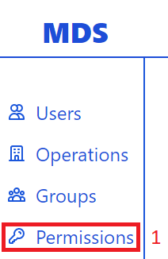{kind=link}
Granting & Revoking Permissions#
To grant or revoke permissions for a user click on the user you want to manage the permissions for (1).
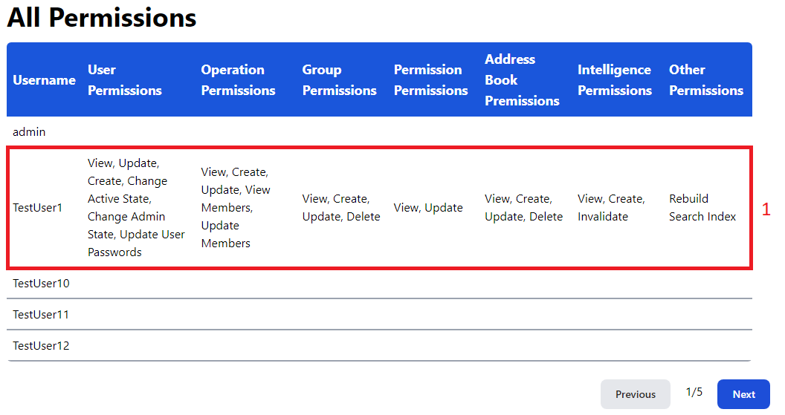{kind=link}
This opens the permission editing view. Here you can check different checkboxes to grant permissions to the users or uncheck them to revoke the associated permission. To apply the changes to the user click on the Update Permissions button (2). To close the permission editing view without changing the permissions click the Cancel button (3).
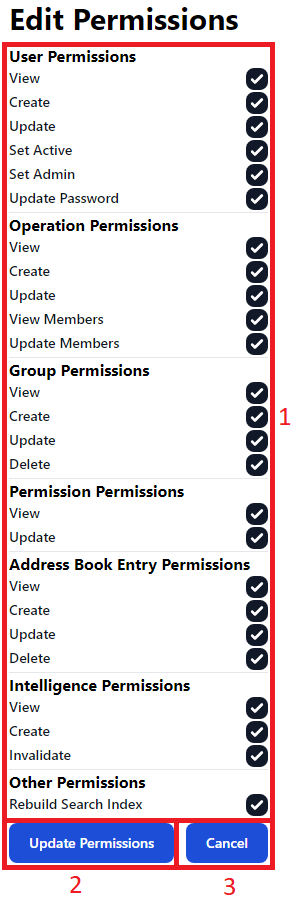{kind=link}
Warning
If you are changing permissions using the permission management you should be aware of the impact of the different permissions and their cross-cutting nature. For example When you grant the operation.memebers.update permission to a user who does not have the users.view permission he still cannot add members to an operation as he cannot retrieve a list of users which could be added to it.
Member Management#
When managing members users can either be added or removed from the members list. To remove users from the members list click on the x (1) after the entry in the members list you want to remove
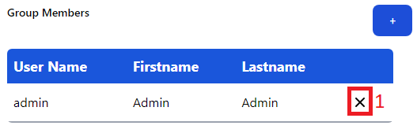{kind=link}
To add users to the member list first click on the + button above the member list (1)
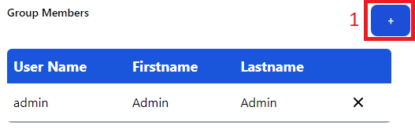{kind=link}
This opens a modal where you can select a number of users to add to the members list. Here you can either select members to add by click on them in the paginated table (2). This table is navigable with the previous (3) and next (4) buttons. You can also select members by clicking on the select box (1) and then type the user you want to add. You get a result of the first 20 possible members found as a dropdown. Select the user you want to add as a member from the drop down.
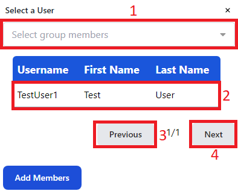{kind=link}
After selecting a user to be added to the members list in either way the user will be highlighted in the table (2) and appear as a bullet next to the user select (1). You can click on these to deselect them. If you want to the selected users to the members list click on the Add Members button (3). If you do not want to add them to the members list simply close the modal.
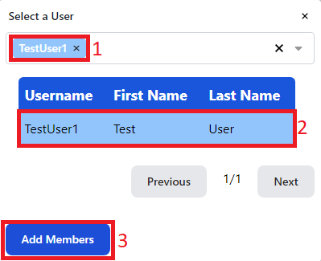{kind=link}
General Usage#
Login & Logout#
To login into the app fill in the username and password of the user you want to login as (1). Then click on the Login button (2)
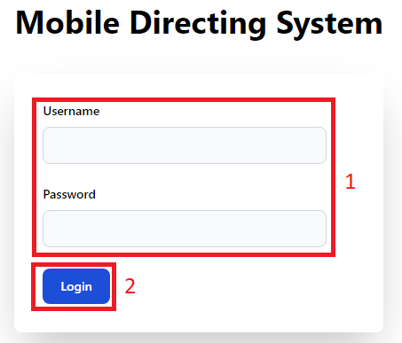{kind=link}
To logout of the app click on the Cog symbol at the top left (1) and then on the Sign Out link (2).
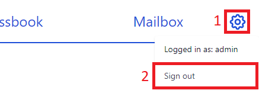{kind=link}
Errors & Notifications#
Error messages and in-app notifications are displayed in a toast at the top middle of the application window (1).
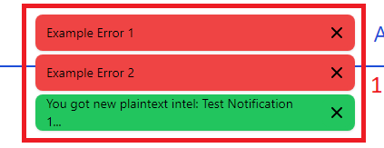{kind=link}
Here at most 3 errors and in-app notifications in total are displayed. The in-app notifications are displayed for example if new intel is received. This intel can then be viewed eiter on the Mailbox or Intelligence pages. Errors have priority over notifications, so if e.g. 3 errors and 1 notification should be displayed only the 3 errors are displayed until one of them is closed. The errors and notifications are automatically dismissed after 10 seconds or if the user clicks the x button (1).
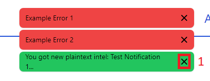{kind=link}
Mailbox#
To navigate to the mailbox page click on the Mailbox link in the navbar at the top of the window (1).
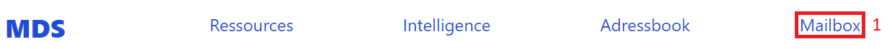{kind=link}
This opens the mailbox page. Here you have a paginated list of received intel with 10 items per page (1). For each item the creator, a shortend version of the content or heading, the reception date, the message type and the importance are displayed. The pages can be navigated using the Previous and Next buttons at the bottom of the table (2 & 3).
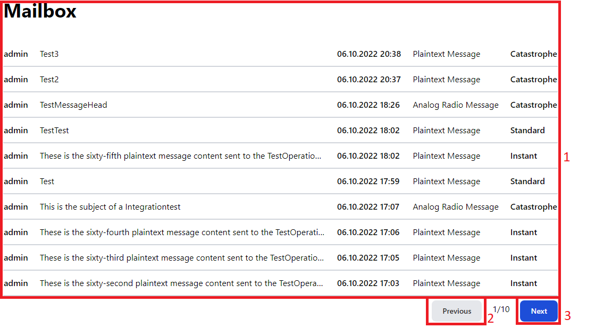{kind=link}
To open an intel just click on the one you want to open in the table (1).
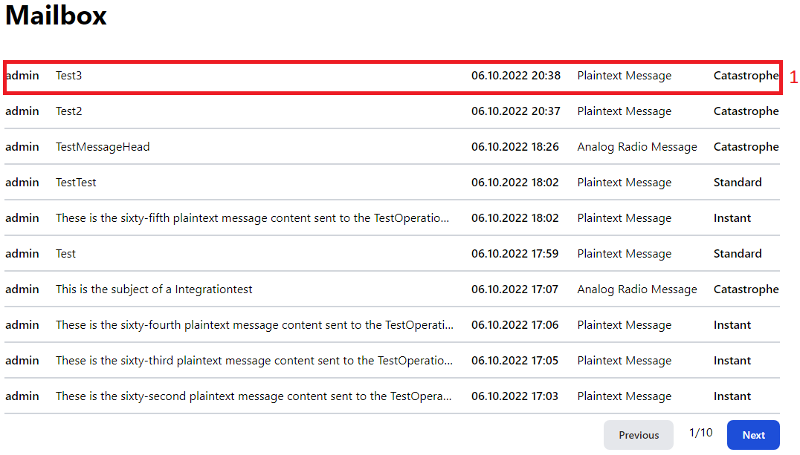{kind=link}
This opens the page displaying the whole contents of the intel. It differs for each type of intel. Currently Plaintext Messages and Analog Radio Messages are supported.
The Plaintext Message view dislays the Creator, the reception time the operation to which the intel was addressed, the importance and the type of the intel (1). To leave this view and return to the mailbox page with the intel items click on the Cancel button (2).
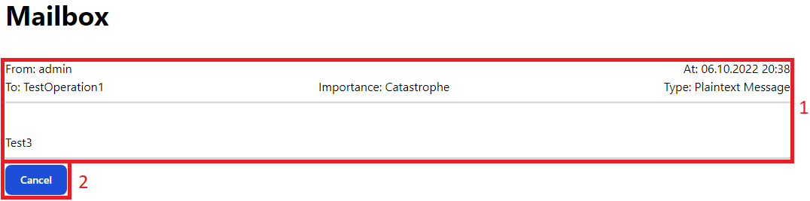{kind=link}
The Analog Radio Message view displays the same meta data, but additionally displays the Callsign, Radio Channel and Subject in a formatted way in addition to the message content (1). To leave this view and return to the mailbox page with the intel items click on the Cancel button (2).
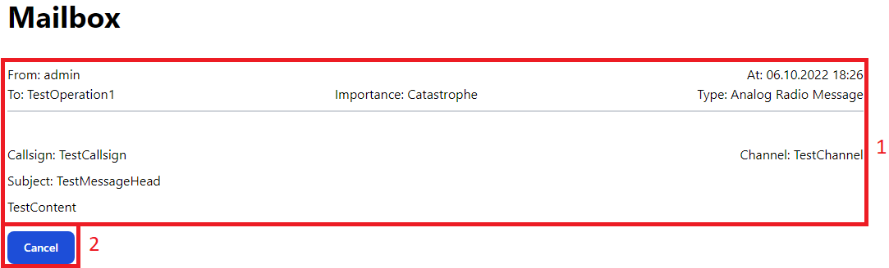{kind=link}
Intelligence#
To navigate to the intel creation page click on the Intelligence link in the navbar at the top of the window (1)
{kind=link}
Here you can see your received intel in the same way you can see it on the Mailbox page (1) and on the other side you can create your intel (2), potentially based on intel received in the view on the left.
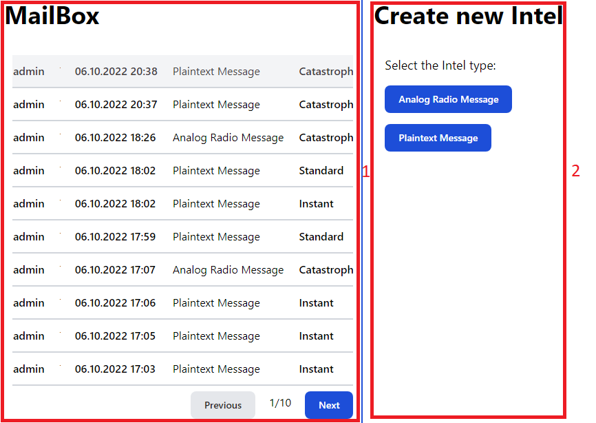{kind=link}